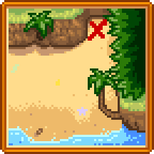

Tagebuch Fetzen
- Siehe auch: Geheime Notizen
Tagebuch Fetzen sind sammelbare Seiten aus dem Tagebuch eines Seemanns, welche auf der Ingwerinsel gefunden werden können. Sie enthalten Hinweise über das Lösen von Rätseln,  Goldene Walnuss-Fundorte und allgemeine Informationen über die Insel.
Goldene Walnuss-Fundorte und allgemeine Informationen über die Insel.
Sie können genau so wie Geheime Notizen gelesen werden, indem man sie in der ersten Reihe des Inventars auswählt und dann einen Rechtsklick ausführt (als ob man Essen konsumiert). Dieses fügt die Seite zur Sammlung des Spieler hinzu.
Es wird keine Lupe benötigt, um Tagebuch Fetzen zu erhalten, obwohl diese nach Nutzung auf der selben Seite wie Geheime Notizen aufgelistet werden.
Tagebuch Fetzen#1
| Notiz |
|---|
| Tag 1
...Mein Schiff ist verloren... Zerschmettert von einem Sturm in der unbarmherzigen See. Ich finde mich jetzt gestrandet wieder, an diesen seltsamen Ufern. Meine Mannschaft ist umgekommen, aber ich lebe noch. Vielleicht hat Fortuna meine gottlosen Knochen gesegnet... Oder sie hat ihre eigenen Pläne für mein Schicksal... Jedenfalls habe ich keine andere Wahl, als mir hier ein Leben aufzubauen. Es gibt frisches Wasser im Überfluß, Nahrung und fruchtbaren Boden zum Arbeiten. Zuerst werde ich einen Unterschlupf bauen... (Es fehlen einige Seiten) |
Tagebuch Fetzen#2
| Notiz |
|---|
| Tag 6
Ich werde hier nicht hungern... die Gewässer sind voll von essbaren (gar köstlichen!) Fischen. Ich habe sogar einen Stachelrochen in den Höhlen an der Südostküste gefangen. Aber ich habe keine Ahnung, was ich damit machen soll! Neulich habe ich sogar ein paar goldene Walnüsse gefischt. Sie scheinen auf der ganzen Insel verteilt zu sein. Die einheimischen Papageien sind verrückt nach ihnen! |
| Details |
|---|
| Tagebuch Fetzen#2 erklärt die Goldenen Walnüsse auf der Insel, welche als Währung bei den Papageien genutzt werden können. |
Tagebuch Fetzen#3
| Notiz |
|---|
| Tag 14
Nach einem halben Monat auf dieser Insel habe ich das eine oder andere über das Auffinden dieser goldenen Nüsse gelernt. Man muss die Augen nach subtilen Hinweisen offen halten. Wenn etwas ungewöhnlich aussieht, könnte eine Nuß in der Nähe versteckt sein. Ich habe Zeichen im Sand bemerkt... und Zeichen auf den Blättern... Ich habe sogar eine Nuss in einem Baum in der Nähe des Vulkans gesehen. Wenn ich nur eine Möglichkeit hätte, sie runterzuschießen ... Immer, wenn ich eine Nußpflanze gesehen habe, habe ich einen Weg gefunden, sie zu erreichen. |
| Lösung |
|---|
| Eine Schleuder kann genutzt werden um eine Goldene Walnuss von der Palme auf der rechten Seite des Vulkans herunter zu schießen. |
Tagebuch Fetzen#4
| Notiz |
|---|

|
| Lösung |
|---|
| Die Karte zeigt eine Gegend etwas nördlich von Birdies Hütte an. Wird hier gegraben erhält man einen Qualitäts-Bobber. |
Tagebuch Fetzen#5
| Notiz |
|---|
| Tag 23
Der lokale Vulkan birgt viele Geheimnisse. Ich habe kleine Männer mit glühenden Augen gesehen, die im Dunkeln herumstreunen... wie Katzen in der Nacht. (Könnten das die sagenumwobenen Zwergmenschen sein, die M. Jasper in seinen 'berühmten Reisen' erwähnt hat?) Auch seltsame Maschinen. Unheimlich... nichts was der Menschheit bekannt ist. Auf dem Gipfel fand ich einen Durchgang zum Krater des Vulkans. Und, halb untergetaucht in der brodelnden Lava, eine seltsame Maschine... eine Art "Schmiede-Ofen". Ich werde morgen weiter nachforschen. |
| Lösung |
|---|
| Ebene 10 des Vulkan-Dungeons hat eine Vulkanschmiede, welche genutzt werden kann um Waffen und Werkzeuge zu verbessern und zu verzaubern. |
Tagebuch Fetzen#6
| Notiz |
|---|
|  |
| Lösung |
|---|
| Die Karte zeigt eine Gegend südöstlich des Insel-Farmhauses an. Hier graben um eine Perle und eine Goldene Walnuss zu erhalten. |
Tagebuch Fetzen#7
| Notiz |
|---|
| --Schmiedetabelle--
Topas -- Verteidigung Smaragd -- Geschwindigkeit Jade -- Kritischer Trefferschaden Aquamarin -- Kritische Trefferchance Amethyst -- Rückschlag Rubin -- Schaden Prismatische Scherbe -- Verzauberung Hinweis: Waffen können bis zu dreimal mit Edelsteinen geschmiedet werden, und können auch einmal mit einem prismatischen Splitter verzaubert werden. Werkzeuge können nur verzaubert, nicht geschmiedet werden. |
Tagebuch Fetzen#8
| Notiz |
|---|
|
--Waffenverzauberungen-- Kunstvoll: Erlaubt es dir, "Spezialzüge" schneller auszuführen. Käferkiller: Fügt Käfern mehr Schaden zu. Vampirisch: Entzieht einem Monster gelegentlich Lebenspunkte. Kreuzritter: Fügt "unheiligen" Monstern mehr Schaden zu. Heumacher: Beim Unkrautschneiden erhält man mehr Fasern und auch eine Chance, Heu zu sammeln. --Werkzeugverzauberungen-- Mächtig: Verursacht mehr Werkzeugschäden an Steinen, Bäumen und dergleichen. Streckung: Erhöht die Aufladekapazität, für einen größeren Wirkungsbereich. Rasur: Möglichkeit, beim Hacken zusätzliches Holz abzuschälen. Bodenlos: Die Gießkanne wird nie austrocknen. Großzügig: Mehr unter der Erde ausgraben. Archäologe: Größere Chance, Artefakte und Knochen zu finden. Effizient: Braucht keine Energie beim Benutzen. Schnell: Schnelleres Schwenken des Werkzeugs. Meister: Erhöht die Fischenfähigkeit. Auto-Haken: Beginnt automatisch das Minispiel sobald ein Fisch anbeißt. Erhaltend: Köder und Anglerzubehör haben eine 50% Wahrscheinlichkeit nicht konsumiert zu werden. |
Tagebuch Fetzen#9
| Notiz |
|---|
| 's war ein regnerischer Tag, und auf einem einsamen Felsen sah ich eine schöne Jungfrau
Geschichten, die ich von Meerjungfrauen gehört hatte, die Sirenengesänge sangen, aber es gab keine Note, die sie aufbringen konnte... Am nächsten Morgen erspähte ich ein Arrangement aus Stein am schäumenden Ufer... Aye... Steine so groß wie Pfennige und Steine so groß wie Kupfergeld-Stücke waren sie... Wenn aber dieser geplagte Seehund eine Melodie heulen könnte, würde sie vielleicht zu Blackgulls Schatz führen... |
| Lösung |
|---|
| Gehe an einem regnerischen Tag zum südöstlichen Gebiet der Insel. Hier befindet sich ein Flötenblock-Abbild im Sand neben Steinen. Platziere pro Steinansammlung je einen Flötenblock im gleichem Abstand. Ändere die Tönhöhe jedes Flötenblocks mittel Rechtsklick auf die Zahl, die die Steine angeben: kleine Steine bedeuten 1 und große Steine 5. Der erste Flötenblock sollte 1 mal geklickt werden um die zweite Tonart zu erhalten, der zweite 10 mal für den 11. Ton, usw. Danach laufe von links nach rechts an allen Flötenblöcken vorbei und erhalte 5 Goldene Walnüsse von der Meerjungfrau. |
Tagebuch Fetzen#10
| Notiz |
|---|

|
| Lösung |
|---|
| Nachdem Tagebuch Fetzen#10 erhalten wurde, grabe an der angezeigten Stelle außerhalb des Vulkans, um ein Straußenei und eine Goldene Walnuss zu erhalten. |
Tagebuch Fetzen#11
| Notiz |
|---|
| Tag 37
Als ich ein zehnjähriger Junge war, schenkte mir mein Vater einen Glühring und einen Magnetring. Seitdem sind sie nie mehr von meinen Fingern gewichen. Als ich jedoch auf der Spitze des Vulkans stand ... kam mir eine seltsame Idee. Ich nahm meine beiden Ringe und warf sie in die Schmiede. Und siehe da! Sie vereinigten sich zu einem! Jetzt habe ich einen glühenden Magnetring... Ich hoffe, der alte Papa hat nichts dagegen, er ruhe in Frieden... |
Geschichte
- 1.5: Eingeführt.